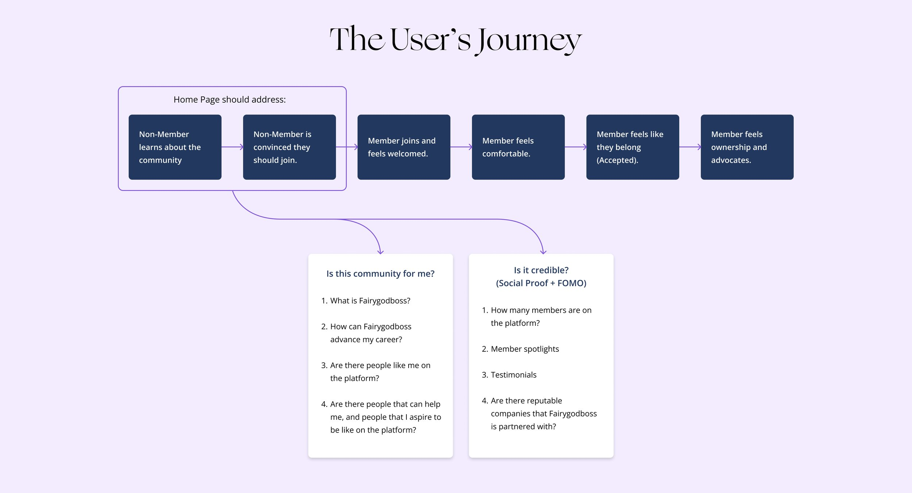

Fairygodboss
Case study for the redesign of Fairygodboss.com’s home page. Fairygodboss is an online career community and job board for women.

Case study for the redesign of Fairygodboss.com’s home page. Fairygodboss is an online career community and job board for women.
I led the end-to-end design on this project, from conducting competitor research and ideation sessions, to early wireframing, visual design, prototyping, and user testing. With the help and close collaboration of the Director of UX, Product Manager and engineering team, I was able to see this design from the beginning through to its recent launch.
I led the end-to-end design on this project, from conducting competitor research and ideation sessions, to early wireframing, visual design, prototyping, and user testing. With the help and close collaboration of the Director of UX, Product Manager and engineering team, I was able to see this design from the beginning through to its recent launch.
I led the end-to-end design on this project, from conducting competitor research and ideation sessions, to early wireframing, visual design, prototyping, and user testing. With the help and close collaboration of the Director of UX, Product Manager and engineering team, I was able to see this design from the beginning through to its recent launch.
I led the end-to-end design on this project, from conducting competitor research and ideation sessions, to early wireframing, visual design, prototyping, and user testing. With the help and close collaboration of the Director of UX, Product Manager and engineering team, I was able to see this design from the beginning through to its recent launch.
Fairygodboss’ previous home page wasn’t clearly communicating the company’s value prop, which was affecting the conversion rate of first time visitors into returning users. It was also in need of an aesthetic update.
Our hypothesis was that a clearly communicated value prop and updated look would attract more people who want to participate in the community, leading to higher conversion and engagement of new users.
Our goal was to increase conversions of first time visitors into members by 67%.
Fairygodboss is a platform for early to mid career professional women in the US.
Internally, we have 4 distinct types of users that interact with our product: consumers, creators, contributors, and jobseekers. The home page was redesigned to specifically address these 4 users’ needs.
With the Director of UX, I conducted user testing on the current home page, to get a sense of what was blocking first time visitors from registering. We were surprised to find that:
Most women immediately classified the site as a job board rather than a holistic career community.
The highest perceived value on the old page was in data that we don’t actually offer, mainly salary information.
With these insights in hand, I mocked up low-fidelity wireframes of a homepage that clarifies our value prop and addresses how each of our 4 user types can benefit from becoming a member.
One challenge in being tasked with designing a new visual direction for the site was how to update and modernize the look and feel of our home page, without straying too far from what users will experience on the rest of the platform.
Using styles and components from the Design System that our design team was working to build out helped shape a foundation for consistency.
Another hurdle I faced was in how to use imagery on the site. It was important to back up our messaging by showing photos of real and diverse women, but we didn’t have much recent or web-ready photography, and wanted to avoid using generic stock photos.
We tested 3 variations of the home page, switching out the imagery above the fold to see which resonated better with users, which established more trust, and which better communicated our offering. The photo of our CEO was the clear winner.
With a high-fidelity prototype, we conducted more user testing of the new concept side by side with the old site, and were able to get user validation that we had taken the right direction in the redesign. We were communicating value, compelling a higher rate of users to sign up, and eliciting a stronger positive emotional response to the new page.
We also uncovered a few issues, such as users thinking they’d have to pay for membership, and questioning whether we’re an online or in-person community.
To solve for these hiccups, we collaborated with our community (content) team to comb over the page’s copy and further clarify our intent while adhering to our brand’s language guidelines.
“It achieves being light and playful, but also serious and sophisticated at the same time.”
Once we had stakeholder approval and a user validated concept, I pushed Figma to its limits to create a fully responsive experience.
This ended up aiding our developers a lot in understanding how the site should resize.
After organizing, annotating, and handing off my designs to engineering, I worked closely with our front-end developers and QA team to answer questions, conduct product review, and help bring the page live.
After living on a variant URL for 2 months during A/B testing, the page officially launched 2 weeks ago!